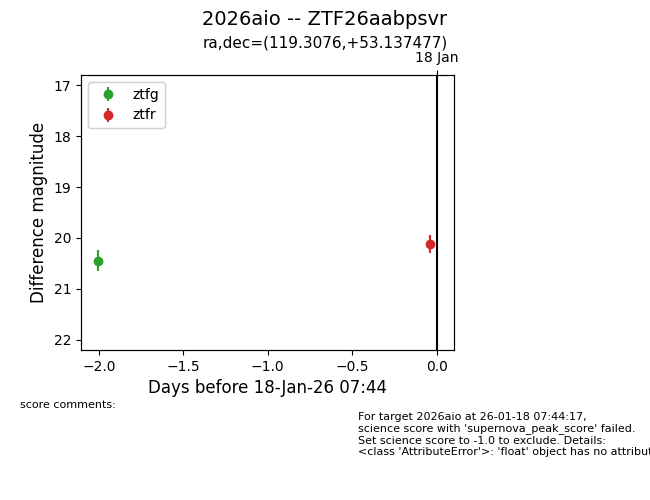
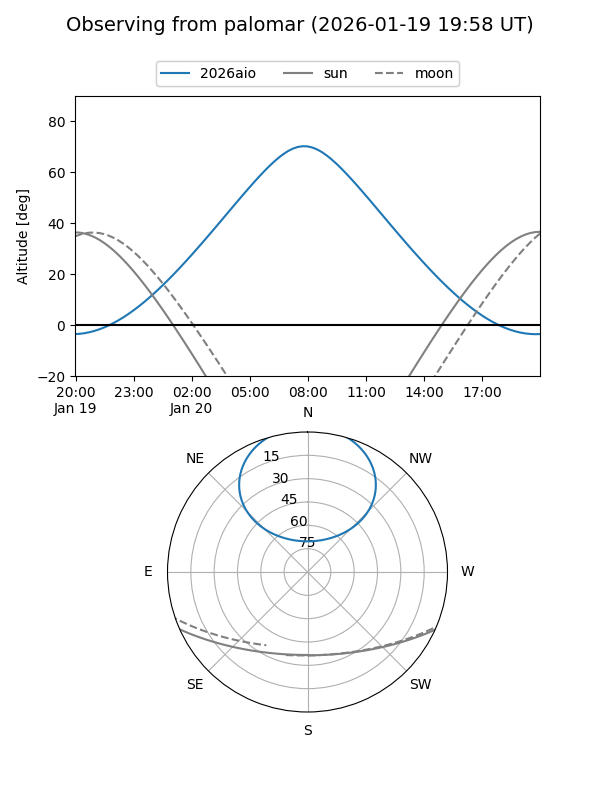

2026aio
Target 2026aio at 2026-01-16 08:45
Aliases and brokers:
FINK: link
Lasair: link
ALeRCE: link
TNS: link
YSE: link
alt names
ZTF26aabpsvr (ztf,fink_ztf)
2026aio (tns,yse)
Coordinates:
equatorial (ra, dec) = 119.3076,+53.13748
equatorial (HMS+DMS) = 07:57:13.83,+53:08:14.92
galactic (l, b) = (165.1280,+31.06399)
Flags:
Photometry:
last ztfg=20.45
1 ztfg detections
Lightcurve

Visibility


Additional plots